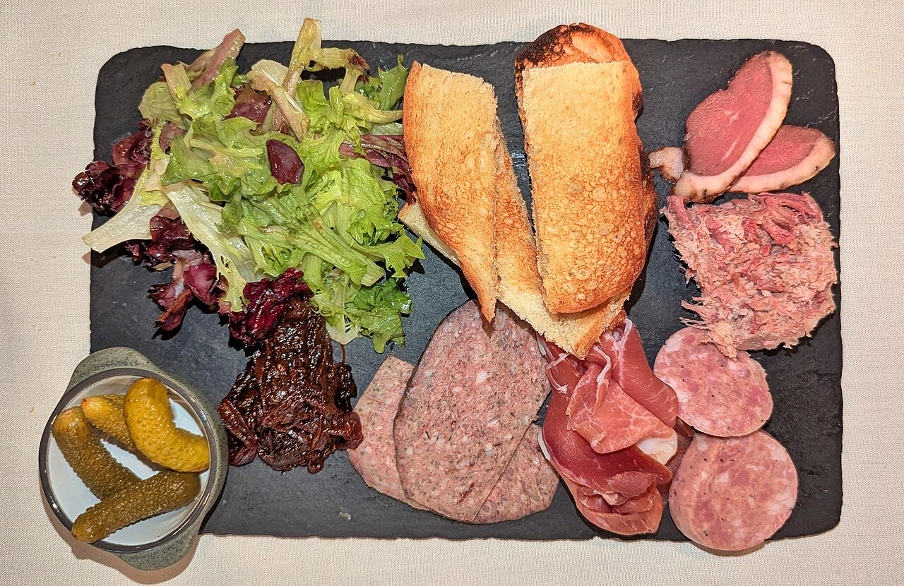

Fotografias ilustrativas — no site final usamos as vossas.
Bar de vinhos · Centro
Vinho com tempo na Rua João de Melo
Um copo com tempo, ao seu ritmo.
4,5★ em 175 avaliações no Google.
Na Rua João de Melo, no centro.
O Pholus Wine Bar fica na Rua João de Melo, no centro de Guimarães. Um bar de vinhos para provar sem pressa e brindar com bons amigos.

Fotografias ilustrativas — no site final usamos as vossas.
Pedido de reserva
Escolha o dia e a hora — o pedido chega por WhatsApp e confirmamos logo.
↑ Assim chegaria a mensagem ao vosso WhatsApp. (Nesta demonstração nada é enviado.)
Onde estamos
Proposta para Pholus Wine Bar
Esta página foi feita de propósito para Pholus Wine Bar por João Machado, programador web aqui de Guimarães. Inclui:
Eu trato do alojamento e da manutenção. Sem compromisso.